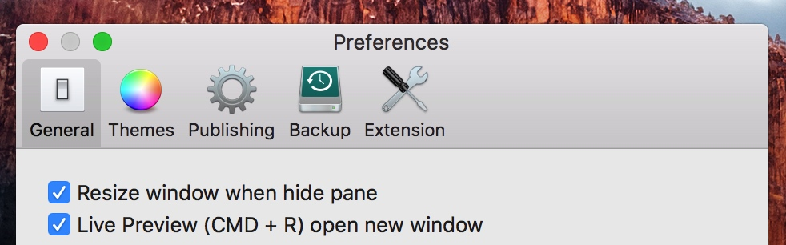
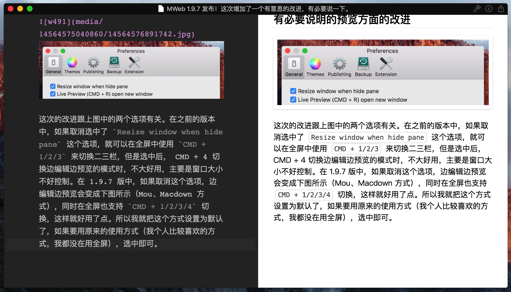
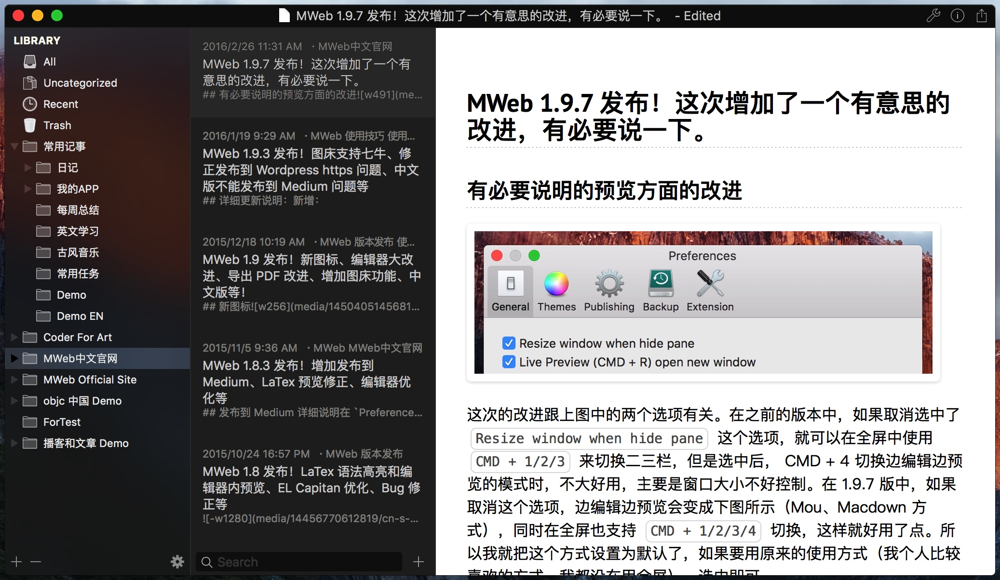

MWeb 1.9.7 发布！这次增加了一个有意思的改进，有必要说一下。
有必要说明的预览方面的改进

这次的改进跟上图中的两个选项有关。
在之前的版本中，如果取消选中了 Resize window when hide pane 这个选项，就可以在全屏中使用 CMD + 1/2/3 来切换二三栏，但是选中后，就不能使用，同时 CMD + 4 切换边编辑边预览的模式时，不大好用，主要是窗口大小不好控制。在 1.9.7 版中，如果取消这个选项，边编辑边预览会变成下图所示（Mou、Macdown 方式），同时在全屏也支持 CMD + 1/2/3/4 切换，这样就好用了点。所以我就把这个方式设置为默认了，如果要用原来的使用方式（我个人比较喜欢的方式，我都没在用全屏），选中即可。

这次也修改了第二次按 CMD + 1/2/3/4 的行为，比如说按 CMD + 4 时变为边编辑边预览模式，这时再按 CMD + 4 则会变为三栏模式，所以现在只要用 CMD + 4 这个快捷键即可在两者切换。CMD + 1/2/3 则是在二栏/三栏和仅编辑器模式间切换，具体可以感受一下即知。
另外顺手也增加了第二个选项：Live Preview (CMD + R) open new window。如果这个选项没有选中，则会以下图的方式显示预览，再 (CMD + R) 则会切换回编辑模式。如果选中，则为原来的方式，这个选项默认也是没选中的。

其它改进和修正
- 图床功能中，七牛上传有时候会出现 401 错误的问题也修正了。
- 发布到 Wordpress.com 现在支持 Latex 了。
- 修正语法和拼写检查的设置不能保存的问题。
- 文档库增加 未分类文档
- 其他的一些 Bug 修正